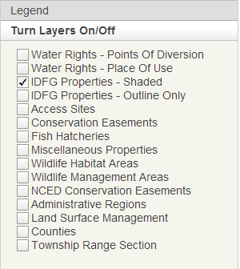

INFORMATION PANEL: Turn Layers On/Off

Toggle each layer listed in the Turn Layers On/Off content pane on/off by checking/unchecking the checkbox in front of each layer name. The Township Range Section and Counties layers have custom labeling depending on the extent of you map.
IMPORTANT: All of the layers listed can be very useful for exploring IDFG property data or creating a custom map but the IDFG properties layer is the only layer queried when using the Search For Properties content panel.
To identify a feature on the map you can click on it and the Popup Information Box will open.
Layer Descriptions:
- Water Rights - Points of Diversion & Water Rights - Place of Use: Points of Diversion (POD) and Place of Use (POU) represent where water is diverted or used from live flow either surface water or ground water (ie springs, stream or a well), to be put to beneficial use under a water right. A Water Right (WR) must have at least one, and may have many POD's. The water use(s) for which diverted water is put can be found under the WR's place of use shape(s) or report. The WR url attribute links to the water right report. For each WR, any or all POD's can serve any or all uses. Shapes for POD's and POU's were initially developed from GCDB as QQ or QQQ centroids based on the POD legal description. Over time better locational information updates the POD or POU shapes. The locational determination of a POD can be found in the DataSource attribute of the layer. A water right (WR) can be in one or more of six processes or stages: Application for a new WR or transfer. Permit for applicant to develop the water use. License through which IDWR has approved final configuration and amounts. Claim is a WR or Beneficial Use which has been claimed in an adjudication. Recommendation is what IDWR recommends to the court during an adjudication. A Recommendation, when approved by the court, is decreed and supersedes its License if one previously existed. Transfer of a portion of the WR or claim is generally through a change of ownership, or change in one or more elements of the WR or claim. For more information about water rights in Idaho see the IDWR Web page at http://www.idwr.idaho.gov/WaterManagement/default.htm
- IDFG Properties: there are two versions listed but these are really the same layer just displayed differently as shaded or outlined only. This layer is a geospatial representation of the properties listed in the Lands Database. Various private, state, and federal entities have entered into agreements with or sold lands to IDFG for the management of the state's fish and wildlife. Each property agreement/lease/deed/easement/permit in Bob Martin's (IDFG) Lands Database was mapped based on their legal descriptions. This layer was created by combining the mapping efforts of Pamela Bond and Angie Schmidt of IDFG and the Idaho Department of Lands. Much of the lands owned by IDFG or leased from IDL can be searched for viewed on the IDL website: http://gis1.idl.idaho.gov. NOTE: Not all records in the Lands Database has a corresponding geospatial feature mainly due to poor legal descriptions.
- Access Sites: This layer depicts all IDFG access site properties that could be mapped as more than just a point on the earth, ie. had some sort of boundary description that could be digitized. A point dataset of all fishing and boating access sites is also available. Properties were combined (via dissolve) based on property name to create the polygons for each access site.
- Conservation Easements: This layer depicts all IDFG conservation easement properties that could be digitized (ie. had a description that could be digitized). Properties were combined (via dissolve) based on property name to create the polygons for each conservation easement.
- Depredations: This layer depicts all IDFG depredation lands that could be digitized. Properties were combined (via dissolve) based on property name to create the polygons for each depredation.
- Fish Hatcheries: This layer depicts all IDFG fish hatchery properties that could be digitized. Properties were combined (via dissolve) based on property name to create the polygons for each hatchery.
- Miscellaneous Properties: This layer depicts all IDFG miscellaneous properties that could be digitized and includes such properties as radio repreaters, patrol cabins, offices, and fisheries related locations (wiers, barrier dams, ladders). Properties were combined (via dissolve) based on property name to create the polygons for each "miscellaneous' property.
- Wildlife Habitat Areas: This layer depicts all IDFG wildlife habitat area properties that could be digitized. Properties were combined (via dissolve) based on property name to create the polygons for each WHA.
- Wildlife Management Areas: This layer depicts the outer boundary of all IDFG wildlife management areas and has undergone rigorous review by regional habitat managers and WMA managers.
- NCED Conservation Easements: This layer is depicts all, not just IDFG, conservation easements in the state of Idaho. For more information about the National Conservation Easement Database, please visit their website: http://conservationeasement.us/.
- Administrative Regions: IDFG Administrative region boundaries.
- Surface Mgmt Agency: This layer was initially created by the Idaho Bureau of Land Management. It has been modified by IFWIS (p.bond) so it is "up-to-date" with our property management information. This layer displays the managing agency, not owner, of the surface of the land. This Surface Management Agency GIS dataset is not a legal document and should be used as a general guide only.
- Counties: This layer depicts the county boundaries of the state of Idaho. It was created by NRCS from 1:24,000 scale USGO topographic maps.
- Township Range Section: This layer depicts township, range, section, and quarter-quarter lines, depending on the scale it is viewed at. This map service contains Public Land Survey System (PLSS) data for most of the USA. The PLSS is a method used in the United States to survey and identify land parcels, particularly for titles and deeds of rural, wild or undeveloped land. Its basic units of area are the township and section (First Division and Second Division) The primary source for the data is cadastral survey records housed by the BLM supplemented with local records and geographic control coordinates from states, counties as well as other federal agencies such as the USGS and USFS. The data has been converted from source documents to digital form and transferred into a GIS format that is compliant with FGDC Cadastral Data Content Standards and Guidelines for publication. This data is optimized for data publication and sharing rather than for specific "production" or operation and maintenance. The data represented here include the following: • PLSS Townships – These are rectangular grids that are approximately 6 miles square. • First Divisions – Also referred to as sections is a one-square-mile block of land which is approximately one thirty-sixth of a township. Due to the curvature of the earth, sections/first divisions may occasionally be slightly smaller than one square mile. • Second Divisions – A quarter-quarter section or sixteenth of the first division. It represents the smallest division in the hierarchical break down of the PLSS Rectangular surveys.
Layer Updates:
- All IDFG properties related layers - IDFG Properties, Access Sites, Conservation Easements, Depredations, Fish Hatcheries, Miscellaneous Properties, WHAs and WMAs will be up-to-date at all times.
- IDWR water right layers will be updated as needed.
- NCED data will be updated once a year sometime after June.
- Surface Mgmt Agency data will be updated infrequently - optimistically, once a year.
- There is no plan to update the County or Township Range Section data as they should change very infrequently.
Created with the Personal Edition of HelpNDoc: Generate EPub eBooks with ease